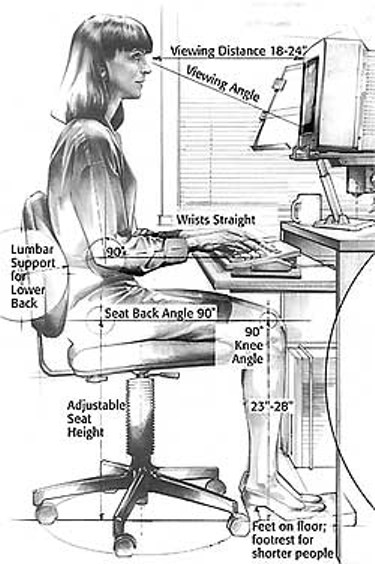

Организацията на работното място е важна не само за здравето на работниците и служителите, но може да повиши и производителността на труда. Има редица рискове, които могат да бъдат избегнати без влагане на особени средства - организация за подреждане на работните помещения, работното оборудване на работното място, избягване на монотонност и стрес, организация на дейностите с цел избягване на неудобни пози, бърз темп на работа и т.н. Обикновено работодателите се оправдават за лошите условия на труд в предприятието с необходимостта от инвестиции, трудната икономическа обстановка и липсата на финансови средства.
НАРЕДБА № 7 ОТ 23 СЕПТЕМВРИ 1999 Г. ЗАДАВА МИНИМАЛНИТЕ ИЗИСКВАНИЯ ЗА ЗДРАВОСЛОВНИ И БЕЗОПАСНИ УСЛОВИЯ НА ТРУД НА РАБОТНИТЕ МЕСТА И ПРИ ИЗПОЛЗВАНЕ НА РАБОТНОТО ОБОРУДВАНЕ
Трябва да се осигури:
- ограда около територията на предприятието; пътищата на територията на предприятието се изграждат и поддържат с трайна настилка и се означават с необходимите маркировка, пътни знаци и сигнализация.
- производствен микроклимат с допустими норми за шум, вибрации, прах, токсични вещества, осветление, нейонизиращи и лазерни лъчения в работните помещения и на работните места.;
- технологични процеси и дейности с отделяне на прах, токсични и други вредни вещества, шум и вибрации над установената норма, наличие на йонизиращи лъчения, инфрачервена радиация, ултравиолетово лъчение, лазери, електромагнитни полета, с прегряващ микроклимат, мокри процеси и др. се организират в отделни сгради или помещения при спазване изискванията на съответните за вида дейност нормативни актове за осигуряване на здравословни и безопасни условия на труд и пожарна безопасност.;
- да се спазят изискванията за стени, подове, прозорци, стълбища и капандури;
- електрическите и енергоразпределителните съоръжения и инсталации се проектират и изработват така, че при използването им да не предизвикат опасности от пожар или взрив. Експонираните работещи лица трябва да бъдат предпазени по подходящ начин срещу риск от поражения от електрически ток при директен или индиректен контакт.
ПОДРЕЖДАНЕ НА РАБОТНИТЕ ПОМЕЩЕНИЯ И РАБОТНОТО МЯСТО
- Размерите на работните помещения, броят на хората, разполагането на работно оборудване в тях, пътищата за транспортни средства и хора и свободните площи отговарят на изискванията на нормативните актове за безопасност и здраве при работа и пожарна безопасност за съответната дейност.
- Подвижните или фиксираните работни места на високо или ниско местоположение трябва да бъдат устойчиви и здрави, като се вземат под внимание:
- броят на заетите на площадката работещи;
- максимално възможното натоварване и разпределението на товарите;
- възможните външни въздействия.
- Организацията на работа, размерите и подреждането на работното място се съобразяват с физиологичните и ергономичните изисквания за осигуряване на нормално протичане на работния процес и за отстраняване или намаляване на риска за здравето при изпълнение на трудовата дейност.